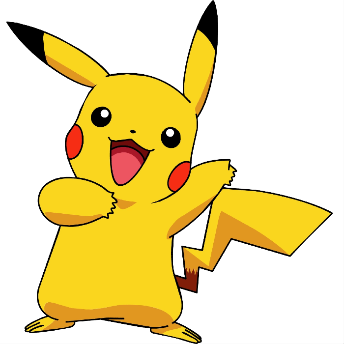

Informações do Vídeo
- Data: 28 de fev. de 2021
- Roteiro e Narração: Leandro S. Ferreira
- Edição: Izabelle Oliveira
- Edição e Finalização: Luan Schuindt
Fontes do Vídeo
- Bulbapedia
- Dr. Lava
- Folha de São Paulo
- Fundação Biblioteca Nacional
- JBox TV
- Jornal do Brasil
- Nintendo Online Magazine
- Nintendo Power
- Serebii
- Tribuna Bis